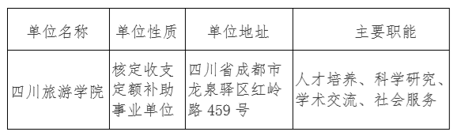

机构
机构 新闻
新闻 信息公开
信息公开 服务
服务 互动
互动 办公系统
办公系统
根据《事业单位人事管理条例》（国务院令第652号）、《事业单位公开招聘人员暂行规定》（人事部令第6号）和《四川省省属事业单位公开招聘工作人员实施细则（试行）》（川人发〔2006〕34号）、《关于进一步规范省属事业单位公开招聘工作人员工作的通知》（川人办发〔2009〕457号）等文件规定，经四川省教育厅科学技术处-四川省教育服务公共平台网站核准，我校面向社会公开招聘15名工作人员。现将公开招聘有关事项公告如下（本公告同时在四川省人力资源和社会保障厅官网【网址：http://rst.sc.gov.cn/，下同】“人事考试”专栏、四川省教育厅科学技术处-四川省教育服务公共平台网站官网【网址：http://scest.net/，下同】）及四川旅游学院网站（【网址：http://www.sctu.edu.cn，下同】上发布）。
一、招聘单位基本情况

附招聘单位简介
四川旅游学院是教育部2013年批准设立的四川省属全日制普通本科高校，是中国第一所以“旅游”命名的普通本科高校，是全国100所“应用型本科高校产教融合发展工程项目”建设高校，四川省教育综合改革首批试点高校，四川省本科院校整体转型发展改革试点高校，2018年被国务院侨办批准为“海外惠侨工程----中餐繁荣基地”。学校坚持“地方性、应用型”办学定位，肩负“强旅报国”的历史使命，不断深化教育改革，传承中国优秀旅游、烹饪文化，培养适应经济社会发展的应用型人才。
学校主校区位于四川省成都市龙泉驿区红岭路459号，占地面积42.40万平方米，设有烹饪学院、食品学院、希尔顿酒店管理学院、运动与休闲学院、旅游文化产业学院、经济管理学院、外国语学院、信息与工程学院、艺术学院、马克思主义学院、继续教育学院、创新创业学院等12个二级学院。其中，希尔顿酒店管理学院是我校与希尔顿酒店管理集团合作建立的全球第二家学院。开设有烹饪与营养教育、食品科学与工程、会展经济与管理、酒店管理、休闲体育、旅游管理、建筑电气与智能化、风景园林、商务英语、物流工程等25个本科专业，同时开办有中西烹饪、高尔夫等特色专科专业。
其他详细情况请在四川旅游学院网站上查阅（网址：http://www.sctu.edu.cn）。
二、招聘对象、范围及基本条件
（一）招聘的对象及范围
面向全国招聘2020年7月31日前取得普通高等教育研究生学历、硕士及以上学位,并完全符合附件《四川旅游学院2020年12月公开招聘工作人员岗位和条件要求一览表》（含表注，以下简称《岗位和条件要求一览表》）相关岗位条件要求和本公告其他要求的人员。报考者必须在报名时取得符合岗位条件要求的国家承认学历的毕业证、学位证等证书。未在规定时间内取得并提供有关证书的，视为报考者自动放弃，责任自负。2020年8月1日之后毕业的在读生不属于本次公招的范围。
报名时本单位的在编工作人员，不属本单位本次招聘对象范围。
（二）基本条件
1.报考者应同时具备以下条件：
(1)具有中华人民共和国国籍，热爱社会主义祖国，拥护中华人民共和国宪法，拥护中国共产党，遵纪守法，品行端正，有良好的职业道德，爱岗敬业，事业心和责任感强。
(2)身体健康，体检合格，能正常履行招聘岗位职责。
(3)具备本公告具体招聘岗位要求的条件和资格（详见《岗位和条件要求一览表》）。其中，报考者本人有效学位证上的学位，应与拟报考岗位的“学位”资格要求相符；报考者本人有效的毕业证所载学历，应与拟报考岗位的“学历”资格要求相符。不符报考条件者，请勿报考，否则取消报考或聘用资格，责任由报考者自负。
(4)中小学教师报考者，须征得县以上教育行政主管部门书面同意。
(5)委培、定向毕业生，须征得原委培、定向单位同意。
2.有下列情况之一者，不得报考：
(1)曾受过各类刑事处罚的。
(2)曾被开除公职的。
(3)有违法、违纪行为正在接受审查的。
(4)尚未解除党纪、政纪处分的。
(5)按照《事业单位公开招聘人员暂行规定》和《四川省省属事业单位公开招聘工作人员实施细则（试行）》的相关规定应当回避的。
(6)尚处于试用期内的新录用公务员。
(7)按照中共中央办公厅、国务院办公厅《关于加快推进失信被执行人信用监督、警示和惩戒机制建设的意见》规定，由人民法院通过司法程序认定的失信被执行人。
(8)有违反有关规定不适宜报考事业单位的。
三、招聘岗位、名额
本次招聘均在事业单位经批准设置的岗位内招聘，招聘名额为15名。具体岗位见《岗位和条件要求一览表》。
四、报名、缴费、公布岗位调减及退费
（一）时间安排（根据新冠肺炎疫情防控要求，本次招聘可能会调整考试日程，调整情况将提前在四川旅游学院网站予以发布，请报考人员随时关注变化情况并做好相应安排）
1.网上报名：2020年 11月25日09：00至11月28 日12：00。
2.网上初审：2020年 11月25日09：00至11月28 日17：00。
3.网上缴费：2020年11月 25日09：00至11月29日17：00。
4.准考证打印：2020年12月9日至12月11日。
5.笔试时间：暂定2020年12月12日（具体时间详见准考证）。
（二）报名方式
本次公开招聘采取网上报名、网上缴费方式进行，不组织现场报名。报名网站：登录成都市人力资源和社会保障局（http://cdhrss.chengdu.gov.cn）官网，点击右侧“个人服务—>人事考试”栏进入成都人事考试网报名。
（三）报名程序
1.明确要求。报考者登录报名网站后，应认真阅读本公告，详细了解招聘对象、范围、条件以及有关政策规定和有关注意事项等内容，根据自身情况选择完全符合报考条件的一个岗位报名，每个报考者在本次公招中限报一个岗位。
2.报名注册。报考者须按网络提示进行注册，填写个人基本信息并上传照片（已经注册的报考者可直接登录报名）。电子照片须为本人近期免冠正面证件照，格式为jpg，像素为102（宽）×126（高），大小在20KB至160KB之间。报考人员可下载并使用自动审核程序处理后上传照片，系统会自动审核照片。不按规定上传照片者，将无法通过资格初审和缴纳报名费。上传照片与本人不符的，将不能参加本次考试。
3.填报信息。上传照片审查合格的报考者，在网上选择应聘岗位后应如实、准确填写《应聘资格审查表》的各项内容并认真核对，确认无误后提交。如因填写错误、不完整、不准确造成最终资格审查不通过的，由此产生的后果由应聘人员自行承担。
4.资格审查。本次考试由四川旅游学院负责进行网上初审。报考者提交《应聘资格审查表》后的1-2个工作日，登录成都人事考试网站查询是否通过资格审查(所有报考者的资格审查结果于11月28日17:00前反馈完毕)。
网络报名资格审查合格不代表最终资格审查合格。报考者最终是否符合所报岗位条件要求由四川旅游学院负责的面试资格审查、考核中的复核和报送省教育厅前我单位审核确认的结果最终确定。在招聘的任何环节发现报考者不符合报考条件、弄虚作假、违反回避制度的，报考或聘用资格一律无效，且责任自负。
5.确认缴费。通过资格初审的应聘人员按网络提示缴纳笔试考务费。根据四川省发展和改革委员会、四川省财政厅《关于重新公布人力资源保障部门行政事业性收费的通知》（川发改价格〔2017〕472号）文件规定，笔试每科收费50元，本次笔试共缴费100元。缴费成功后将不能再更改报名信息，除岗位取消情况外概不办理退费手续。逾期未缴费者，视为自动放弃。
6.打印《应聘资格审查表》。缴纳了笔试考务费的报考者，须及时登录成都人事考试网，按网络提示打印《应聘资格审查表》2份，供面试资格审查时使用。
（四）岗位调整
招聘岗位的报考人数（以缴费为准，下同）与招聘名额之比未达到本公告规定的笔试开考比例的，由四川旅游学院调减该岗位招聘名额或取消该招聘岗位。调减或取消的情况，由四川旅游学院于2020年12月2日在四川旅游学院网站上向社会公布。已缴费但招聘岗位被取消的报考者，成都人事考试网将于2020年12月14日前通过网络平台退还笔试考务费到其支付账号。
（五）打印准考证
网上报名并缴费成功的报考者，请于规定时间凭报名时的姓名和身份证号登录成都人事考试网打印本人《准考证》。在考试当天，报考者须持本人准考证和身份证（不含旧版临时身份证和过期身份证、身份证复印件、户口簿）按准考证指定的时间和考场参加笔试。逾期未打印准考证，以及相关证件不符合规定要求而影响考试的一切责任由报考者自行承担。
五、考试
本次公开招聘采取综合淘汰的考试方式进行。考试包括笔试和面试。
按照事业单位公开招聘工作人员的有关规定，结合四川旅游学院实际，本次笔试开考比例（有效报考人数与招聘岗位的招聘人数之比）不低于3:1。
考试成绩按以下原则计算：
笔试总成绩（含政策性加分，下同）=笔试成绩+政策性加分
面试成绩=结构化面试成绩×100%
考试总成绩=笔试总成绩×40% + 面试总成绩×60%
（一）笔试
1.笔试科目。笔试科目2科，为《职业能力倾向测验》（科目一）、《公共基础知识》（科目二）。笔试科目卷面满分均为100分。笔试成绩满分为100分，按照两科成绩各占50%计算（科目一×50%+科目二×50%）。笔试均采用集中闭卷考试方式。笔试时间为180分钟（科目一90分钟，科目二90分钟）。
2.笔试时间地点。
笔试暂定于2020年12月12日进行（如因新冠肺炎疫情调整，将会提前在四川旅游学院网站、成都人事考试网公告）。具体时间和具体地点详见《准考证》。缺考笔试科目或笔试成绩为0分的报考者，视作自动放弃，取消报考资格。
3.笔试成绩公布。
笔试总成绩及岗位排名于2020年12月25日17：00前在四川旅游学院网站公布，报考者请自行查询。根据《四川省人事考试查分规则》规定，本次考试均为客观题科目，不受理查分申请。
4.政策性加分。按照《关于进一步完善“三支一扶”计划志愿者有关政策的通知》（川人发〔2007〕16号）等文件规定，参加“大学生志愿服务西部计划”、“三支一扶”计划以及“农村义务教育阶段学校教师特设岗位计划”服务期满且经服务所在地县以上团委（或人事局、教育局）考核合格的志愿者报考事业单位的，在乡镇及以下基层单位每服务满1周年，可享受笔试成绩加2分、最高不超过6分的政策性加分。大学生村（社区）干部按《关于大学生村（社区）干部报考公务员和事业单位工作人员享受加分政策有关问题的通知》（川组通〔2010〕4号）规定加分。符合《关于加强新形势下征兵工作的意见》（川委发〔2011〕16号）和《关于退役大学生士兵报考事业单位享受基层服务项目服务期满大学生同等待遇问题的通知》（川人社办发〔2012〕406号）规定的退役士兵，按规定加分。
申请加分的报考者，务必于2020年12月8日17∶00前在工作时间将以下材料交四川旅游学院人事处（地址：四川省成都市龙泉驿区红岭路459号行政楼316办公室,联系电话028-84885045）,以便审查。
1.“大学生志愿服务西部计划”、“三支一扶”计划以及“农村义务教育阶段学校教师特设岗位计划”和大学生村（社区）干部：服务所在地县以上团委（或人社局、教育局）出具的证明、考核材料、服务合同（协议）和服务证书等材料原件及复印件。
2.申请加分的退役大学生士兵，须提供本人有效的《退出现役证》、《优秀士兵证》、《优秀士官证》、《优秀义务兵证》、《优秀学员证》有关奖励证书（证章）和专科及以上毕业证等材料原件及复印件。
材料不齐备、非原件或逾期未按要求提交材料的，不予受理、责任自负。经审查符合条件的由四川旅游学院按公告和有关政策规定加分。
（二）面试
1.面试方式。采用结构化面试方式。面试成绩满分为100分。
2.确定参加面试资格审查人员。我校根据各具体招聘岗位参考人员笔试总成绩及招聘名额，从高分到低分按5:1的比例确定面试入围资格审查人员。与最后一名面试入围资格审查人员笔试总成绩相同的人员，一并确定为面试入围资格审查人员。
3.面试资格审查手续的办理。面试资格审查由四川旅游学院负责进行。具体时间、地点及人员名单于2020年12月26日前由我校在四川旅游学院网站公布，不再另行通知，请报考者注意查阅。
获得面试资格审查的参考人员请按照规定的时间带上以下材料到指定地点办理面试资格审查手续：
①《应聘资格审查表》2份（请在成都人事考试网报名网站上自行打印）；
②有效身份证原件和复印件1份；
③有效的学位证、毕业证原件和复印件1份；
其最终是否符合报考岗位的学位、学历和专业资格条件，以本人毕业时取得的有效学位证及毕业证所载学历和专业名称为准。不符者，我校将取消报考者的报考资格，责任由报考者自负。
其中留学回国人员需提供经教育部留学服务中心认证的学历学位证明原件和复印件1份。
④近期2寸免冠证件照片一张（贴面试通知书用）；
⑤个人详细简历一份；
⑥报考者组织关系所在党组织出具的政治面貌证明；
⑦报考者所就读学校学工部门、校团委或所在学院提供的报考者担任过学生干部的证明原件1份。
⑧在职人员应提供原单位出具的同意报考书面材料或者生效的劳动（人事）争议仲裁裁决书等有效书面证明材料。
其中①-⑦项为必备材料（在职人员须提供第⑧项）。不能按要求提供上述证件和证明以及未按时参加资格审查的，视为自动放弃其面试资格。
面试资格审查中因发现不符合报考条件取消面试资格以及因缺少上述证件和没按规定时间参加资格审查自动放弃其面试资格而产生的空额，按笔试总成绩从高到低依次等额递补人员参加面试资格审查。依次等额递补取得面试资格审查的人员，由我校根据报考人员在《应聘资格审查表》上所留联系电话在面试资格审查当日直接通知其在规定的时间、地点进行资格审查。因递补人员联系电话留错或不畅通导致不能递补参加面试资格审查的，视为自行放弃，责任自负。
通过面试资格审查并按川发改价格〔2017〕472号文件规定缴纳了80元面试费的面试人员，由学校人事处发给《面试通知书》。
4.面试时间及地点。
面试的时间及地点详见《面试通知书》。
面试当日，面试人员凭面试通知书、本人有效身份证按面试通知书规定的时间、指定的地点准时到面试考场候考。未按规定时间到考场候考的视为自动放弃面试资格。由此出现的面试名额空缺不再递补面试人选。
如因面试入围资格审查或缺考出现空缺而产生的实际参加面试人数低于规定的面试入围比例时，面试正常进行。如某招聘岗位实际面试人员未形成竞争（即参加面试人数少于或等于该岗位拟招聘人数），该岗位面试人员面试成绩低于60分的，取消应聘资格。
5.面试主要范围。
重点考核与辅导员工作相关的大学生思想政治教育与管理方面的专业知识、语言表达能力、沟通协调能力和团队合作能力等。
6.面试成绩公布。
报考者的面试成绩当场公布并由报考者本人签字确认。
（三）考试成绩公布
面试工作结束后，由四川旅游学院于面试后3个工作日内在四川旅游学院网站上公布实际参加面试人员的考试总成绩（含笔试成绩、加分、面试成绩、总成绩及排名）。
六、体检
（一）体检人员确定
根据招聘名额，按照报考者考试总成绩，由四川旅游学院从高分到低分依次等额确定体检人员。如考试总成绩相同，按面试成绩从高到低确定体检人员。
（二）体检标准
体检的项目和体检标准参照《四川省教育厅科学技术处-四川省教育服务公共平台网站关于印发〈四川省申请认定教师资格人员体检办法〉的通知》（川教〔2004〕295号）、《四川教育厅关于调整〈四川省申请认定教师资格人员体检工作指导意见〉的通知》（川教〔2007〕102号）、《四川教育厅关于调整〈四川省申请认定教师资格人员体检工作指导意见〉有关条款的通知》（川教〔2010〕26号）、《关于进一步规范入学和就业体检项目维护乙肝表面抗原携带者入学和就业权利的通知》（人社部发〔2010〕12号）和《关于对怀孕考生参加体检有关问题的复函》（国公考录函〔2009〕07号）的要求执行。
（三）体检时间和地点
体检由四川旅游学院组织在指定的二级甲等以上综合性医院进行。体检时间、集合地点及人员名单随面试人员考试总成绩公布。
未按规定时间到指定地点参加体检，以及未在规定的期限内完成规定项目体检的考生，视为自动弃权。
（四）复检及递补
初次体检不合格的，本人可在接到体检结果通知三日内申请复检一次。复检由四川旅游学院指定到除原体检医院以外的二级甲等以上综合性医院进行。申请复检人员的体检结果以复检结果为准。
某岗位因体检人员自动弃权或体检不合格而出现的空额，按照参加面试考生的考试总成绩，从高分到低分依次等额递补体检人员。如该岗位所有参加面试的人员体检均不合格或无人可递补，不再递补。
七、考核
四川旅游学院对体检合格人员的思想政治素质、遵纪守法情况、道德品质修养、心理调适能力等方面进行综合考核，并对其与报考相关的人事档案等材料的真实有效性和报考资格进行核实确认。对考核中取消报考资格以及通过考核的报考者在公示前自动放弃出现的空额，按该岗位参加面试考生的考试总成绩从高分到低分依次等额递补人选进行体检和考核，如该岗位所有参加面试的人员综合考核均不合格或无人可递补，不再递补。
八、公示
考试、体检、考核合格者由四川旅游学院确定为拟聘用人员，并在四川省人力资源和社会保障厅官网“人事考试”专栏、四川省教育厅科学技术处-四川省教育服务公共平台网站官网、四川旅游学院网站上公示7个工作日。
公示内容包括拟报送省教育厅审核确认人员的姓名、性别、出生年月、准考证号、毕业学校、专业、学历学位、招聘岗位要求的本人其他有关基本情况、考试总成绩、排名以及该岗位招聘条件等基本情况，并公布监督举报电话接受社会监督和举报。举报者应以真实姓名实事求是地反映问题，并提供必要的调查线索。凡以匿名或其他方式反映的问题不予受理。
对公示期间反映有严重问题并查有实据、不符合报考条件的，取消被公示人拟聘用人员资格，不再予以审核确认；对反映有严重问题，但一时难以查实或难以否定的，可先报送省教育厅进行审核确认，但一经核实不符合报考条件的，取消其拟聘用或聘用人员资格。公示期间因被公示人弃权或因其被举报查实取消资格后出现的空额不再递补。
公示后因拟确认人员弃权等原因出现的招聘名额空额，不再递补；拟确认人员的材料报送省教育厅后，因弃权等原因出现的招聘名额空额不再递补。
九、审核确认和办理聘用手续
公示无异议人员由四川旅游学院通知报送以下材料的时间和地点。
1.在职人员应提供原单位出具的同意其到新单位应聘的书面材料(通过省教育厅确认后，在职人员再按招聘单位要求提供正式同意解除聘用(劳动)合同或者同意流(调)动的书面材料)或者生效的劳动（人事）争议仲裁裁决书等有效书面证明材料以及有效的毕业证书和学位证书（有学位要求的，下同）。
2.毕业两年内尚未就业的普通大专院校全日制毕业生应提供有效毕业证书和学位证书以及未就业证明。
3.下岗、失业人员应提供户口所在地县级劳动保障部门发放的《再就业优惠证》或失业证明、有效的毕业证书和学位证书以及有效的人事档案管理机构出具的档案管理证明。
四川旅游学院负责对报考人员所提供材料的真实性进行审查，并负责对拟聘人员报考资格条件进行最终审核确认。审查审核合格并经我单位党委常委会研究同意后，将汇总拟聘用人员的相关材料报省教育厅。省教育厅将根据有关规定和我单位报送的人员材料，对拟聘用人员进行确认。
通过省教育厅确认的人员，取得聘用资格。
用人单位凭确认复函，通知被聘用人员在规定的时间内（具体时间以四川旅游学院通知为准）到单位报到，签订事业单位人事聘用合同，实行事业单位聘用制管理。
逾期不能按要求提供上述材料的以及取得聘用资格的人员未按规定时间报到的，视为自动放弃，取消其拟聘（聘用）资格。因以上原因产生的空额，不再递补。
十、纪律与监督
有关单位和工作人员在公开招聘中，应确保信息、过程、结果公开，接受社会及有关部门的监督。对违反规定、弄虚作假聘用的人员一经查实，取消其聘用资格，并对相关人员按照有关规定进行严肃处理。凡违反人事部令第６号第三十条和考风考纪规定，特别是不按公告进行资格审查的，按省人社厅、省监察厅印发的《四川省人事考试违规违纪行为处理办法（试行）》和人事部令第６号第三十条、第三十一条等规定严肃处理，情节严重的给予政纪党纪处分，构成犯罪的，依法追究刑事责任。
十一、特别提示
1.根据新冠肺炎疫情防控要求，本次招聘可能会调整考试日程，调整情况将提前在四川旅游学院网站予以发布，请报考人员随时关注变化情况并做好相应安排。因报考者不主动、不按要求登录相关网站查阅相关信息，导致本人未能按要求参加笔试、面试、体检、考察、递补、聘用的，责任自负。
2.请报考者确保联系方式正确、畅通。否则因无法与报考者取得联系所造成的后果，由报考者自行负责。
3.本单位和省教育厅不举办也不委托任何机构举办考试辅导培训班。
十二、有关咨询、监督电话
政策和考务咨询电话：028-84885045（四川旅游学院人事处）
网络报名技术咨询电话：028-12333
监督电话：028-84825007（四川旅游学院纪委办公室）
028-86110025（四川省教育厅科学技术处-四川省教育服务公共平台网站人事与教师工作处）
附件：《四川旅游学院2020年12月公开招聘工作人员岗位和条件要求一览表》
四川旅游学院
2020年11月18日
 附件：四川旅游学院2020年12月公开招聘工作人员岗位和条件要求一览表
附件：四川旅游学院2020年12月公开招聘工作人员岗位和条件要求一览表